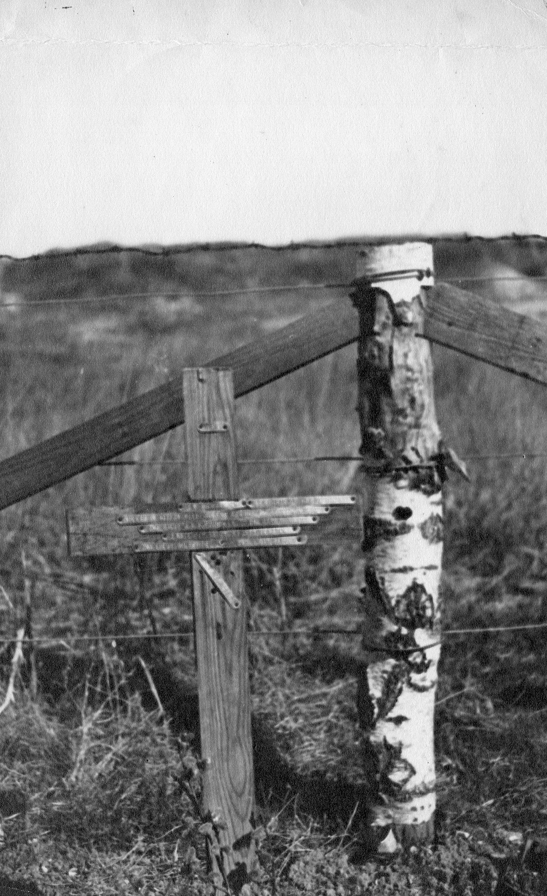

Kenneth John Penrith Asher


Kenneth John Penrith Asher was born in Algers in 1887, and was the son of George Willis Penrose Asher and Esther Fallon. His father worked as a stock and share dealer on the London Stock Exchange, and by 1911 the family was living at 112 Nibthwaite Road, Harrow. The census records show Geoffrey growing up in a large family with four brothers—Frederick Joseph, Howard Walter, Laurence Edward, and Wilfrid Joseph—and a younger sister, Edith Mary.
The Harrow Observer later reported the tragic fact that three of the Tigar brothers lost their lives during the First World War.
Before joining the army, Geoffrey worked in an accountant's office in the City of London, reflecting the professional path he had begun before the outbreak of war interrupted the lives of so many young men of his generation.
Geoffrey served during the First World War and was killed in action on 13 October 1917, aged just 21. He died near Poelcapelle in Belgium during the Third Battle of Ypres (Passchendaele), one of the most gruelling campaigns of the war. The battle was fought in appalling conditions of mud, relentless artillery fire, and heavy casualties, making it one of the defining tragedies of the Western Front.
His death was reported in the Harrow Observer on 26 October 1917, bringing news of his sacrifice to the local community. The loss of Geoffrey, together with that of his brothers, represented a devastating blow to the Tigar family and illustrates the profound impact the war had on families throughout Britain.
Following Geoffrey's death, probate was granted in 1918, and records show that a war pension of £35 per annum was awarded to his family. Such payments offered some financial assistance but could never compensate for the loss of a son.
Today Geoffrey Herbert Tigar is remembered on several war memorials, ensuring that his sacrifice continues to be honoured. His name appears on the John Lyon School Memorial Plaque and Sundial, the memorial at Our Lady and St Thomas of Canterbury Church in Roxborough Park, the memorial at St John the Baptist Church in Greenhill, Harrow, and the Wealdstone Clocktower Memorial. These memorials stand as lasting reminders of a young man whose life and promising future were cut short by the First World War, and of the heavy price paid by his family and community